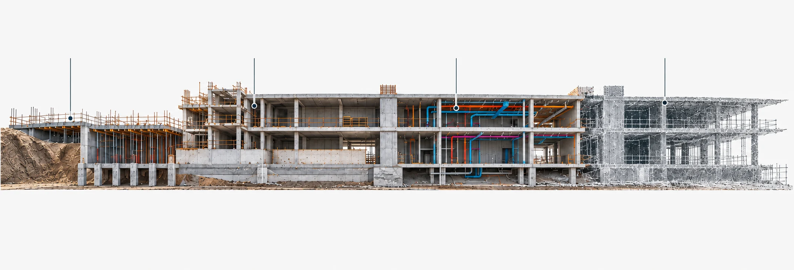

UNION3DReality capture para a construção
v1 · Astro 7.4.4 · global.css · site.ts
Espaçofísico.Informaçãoútil.
O sistema visual do site da UNION3D em uma página: tokens, tipografia, cores, componentes, ícones e movimento. Tudo usa as classes de global.css e o comportamento de site.ts.
Uma família variável faz todo o trabalho. A hierarquia vem de peso, tamanho e espaçamento negativo; não há segunda fonte, itálico nem caixa alta em títulos.
Aa
wght
Papel
Valor
Primária
'Archivo Variable', eixo wght 100 a 900
Pilha de reserva
Arial, sans-serif (token --font)
Monoespaçada
Nenhuma no site. Esta página usa a mono do sistema só para valores de código.
Carregamento
import '@fontsource-variable/archivo' em src/layouts/Layout.astro, versão 5.3.0, empacotada pelo Astro em /_astro. Sem CDN e sem preload.
Arquivos
woff2-variations por subconjunto: latin, latin-ext e vietnamese, separados por unicode-range.
Exibição
font-display: swap: o texto aparece em Arial e troca quando a Archivo chega.
Suavização
-webkit-font-smoothing: antialiased no body; títulos com text-wrap: balance, parágrafos com pretty.
Ag400 · corpo
Ag450 · título de serviço
Ag500 · botões, rótulos
Ag550 · h3 de método
Ag600 · rodapé, destaques
Ag650 · h1, h2, h3
Ag760 · título do hero
Ag850 · marca UNION3D
Escala completa
Valores de global.css. Entre parênteses, os ajustes nos pontos de quebra de 900 e 600 px. h4 a h6 não aparecem no site; a linha indica a proposta derivada de papéis já existentes.
Amostra
Seletor
Peso
Tamanho
Altura
Espaço
Caixa
Antes de decidir,Display do hero
.hero h1
760
clamp(48px, 4.65vw, 76px)86px acima de 1800 · 39 a 54px · 36 a 52px
1.01
-0.04em
none
O espaço existenteh1 de página
h1, .page-opening h1
650
clamp(40px, 5.1vw, 80px)40px até 600
1.08
-0.035em
none
A obra avança.h2 de seção
h2
650
clamp(32px, 3.2vw, 52px)variações: 28 a 68px por seção
A UNION3D registra, documenta e confere condições.body
body
400
17px16px até 600
1.6
normal
none
Procedimento alinhado ao objeto.body-sm
.service-row p, .faq-list p, .method li p
400
16px15px até 600
1.6
normal
none
Estudo visual conceitual de ambiente interior.caption
figcaption, .hero-caption, .windows-caption
400
12px11px até 600
1.5 a 1.6
normal
none
Nomelabel de campo
.field label
500
15px
1.6
normal
none
Sobre · Aplicações · Contatolabel de navegação
.main-nav, .audience-label
400
14px18px no menu móvel
1.6
normal
none
Os demais campos são opcionais.helper text
.form-requirements, .filter-result
400
14px
1.6
normal
none
Fundaçõesrótulo de etapa
.stage-button strong
700
15px13px até 1200
1.6
0.02em
uppercase
Reality capture para a construçãodescrição da marca
.brand-description
400
11px
1.5
0.18em
uppercase
UNION3Dmarca tipográfica
.wordmark
850
36px32px até 900
1
-0.06em
none
Solicitar orçamentotexto de botão
.button, .button-small
500
16px14px no pequeno
1.4
normal
none
03
Sistema de cores
Monocromático por decisão: uma tinta azul petróleo sobre papel quente. Não há cor de destaque, verde de sucesso nem vermelho de erro; os estados se distinguem por peso, contorno e preenchimento. Clique em uma amostra para copiar o hexadecimal.
Valores fixos fora dos tokens
Aparecem diretamente em global.css. São derivados da tinta e do papel.
Variantes de opacidade
O site usa uma única transparência: tinta a 8% (#002e4014) na sombra do menu de serviços. As demais etapas abaixo são a régua disponível para novos usos.
100
80
64
32
16
8 · usado
4
100
80
64
32
16
8
4
Participação em gradientes
O site não pinta gradientes de cor. O único gradiente é uma máscara: ele mistura a fotografia e a representação do mesmo estudo, sem colorir a imagem.
Nenhum gradiente de cor em fundos, botões ou texto
todo o CSS
site
Brilhos radiais em #164657 e #b4cad2 a 10 a 14%
fundos desta página
só aqui
Linha de laser com brilho de #eef3f3
borda da comparação
só aqui
Papéis semânticos e regras de uso
Cada contexto tem poucas opções. Estado nunca depende só de cor.
Contexto
Uso no site
Primária
--ink: títulos, links, botão principal, contorno de foco, seções de tecnologia e chamada final.
Secundária
--text para leitura; #164657 só como hover.
Destaque
Não existe cor de destaque. A ênfase vem da tinta, do peso 650 a 760 e do sublinhado.
Neutras
--paper, --surface, --line, --muted.
Feedback
Monocromático. Campo inválido (:user-invalid): borda e contorno de 2px em --ink. Status do formulário: fundo --surface e texto explícito, com role="status".
Decorativa
#b4cad2 e #6e8a94 sobre tinta; #edf0f0 no hero.
Texto
--text no corpo, --ink em títulos, --muted em apoio, --light-text sobre tinta, #ffffff em botão principal, #62747a em placeholder.
Fundo
--paper na página e campos, --surface em notas e estados ativos, --ink em blocos de ênfase.
Borda
--line em divisórias e filtros, #7c8b90 em campos e busca, --ink em item ativo e lista de serviços, #6e8a94 sobre tinta.
Hover
Principal #164657; contornado --surface; claro #dce5e5; links engrossam o sublinhado para 2px; a seta anda 4px.
Ativo / selecionado
aria-pressed="true": filtro com fundo --ink e texto --paper; etapa com fundo --surface e borda --ink; página atual sublinhada com 5px de afastamento.
Desabilitado
opacity: .6 e cursor: not-allowed, sem trocar a cor.
Foco
outline: 3px solid var(--ink) com outline-offset: 5px em links, botões, campos e summary.
Seleção de texto
Fundo --ink, texto --paper.
Contraste
Calculado pela fórmula de luminância relativa do WCAG 2.
Par
Razão
Uso
Nível
ink sobre paper
13.35:1
títulos, links
AAA
text sobre paper
13.04:1
corpo
AAA
branco sobre ink
14.34:1
botão principal
AAA
branco sobre #164657
10.25:1
botão em hover
AAA
light-text sobre ink
10.87:1
corpo sobre tinta
AAA
#b4cad2 sobre ink
8.41:1
números dos passos
AAA
muted sobre paper
5.75:1
apoio, legendas
AA
muted sobre surface
5.30:1
apoio em notas
AA
placeholder sobre paper
4.55:1
placeholder
AA
#6e8a94 sobre ink
3.91:1
divisória decorativa
não textual
#7c8b90 sobre paper
3.28:1
contorno de campo e busca
AA não textual
line sobre paper
1.43:1
divisórias
decorativa
Elementos não textuais que identificam um componente (contorno de campo e de busca) precisam de 3:1. As divisórias em --line são decorativas: o componente é identificado pelo texto ou pelo rótulo.
04
Componentes
Os exemplos abaixo são as próprias classes do site, funcionando com o mesmo JavaScript. Os brilhos e o efeito de vidro dos botões marcados com “camada” são desta página e podem ser desligados em “Efeitos”.
transparente (--paper no hero) / --ink, borda 1px --ink
.button-small
44px
10px 20px, gap 20px, 14px
herda a variante
.button-light
52px
12px 24px
--paper / --ink
.text-link
auto
gap 20px
herda a cor, sublinhado 1px → 2px
.filter-button
44px
8px 18px, 15px
borda --line; ativo --ink / --paper
Movimento
Valor
Fundo e cor
transition: background 220ms, color 220ms
Seta
transform: translateX(4px), 240ms --ease
Raio
--radius 8px
Toque
-webkit-tap-highlight-color: transparent
Camada desta página
reflexo 900ms, brilho 500ms, ímã até 6px, onda 700ms
Inputs
O formulário real de contato, com as mensagens em português de site.ts. Sem destino configurado, ele só prepara e copia o resumo; nada é enviado.
Formulário em preparação. O canal de recebimento ainda não foi ativado. Você pode preparar e copiar o resumo; nada será enviado pelo site nesta versão.
Cabeçalho real com menu de serviços (abre no clique, fecha com Escape, clique fora ou quando o foco sai). Abaixo de 900px vira o botão “Menu”; reduza a janela para ver.
fixo no topo (sticky, z-index 40), altura mínima 80px (72px até 900), fundo --paper
.main-nav
14px, gap 32px (24px até 1200); página atual sublinhada com 5px
.mega-menu
painel absoluto, grade 1.4fr / 1fr, gap 72px, padding 40px, borda --line, sombra 0 20px 40px #002e4014
Menu móvel
até 900px: painel sob o cabeçalho, itens de 18px com divisórias, rolagem interna até 100dvh − 72px
.breadcrumb
13px --muted, gap 10px, alvo de toque ampliado no celular
Índice do serviço
fixo a 120px do topo no desktop; vira lista em linha até 900px
Neste quadro o cabeçalho deixa de ser fixo para não cobrir a página.
Sections
.section: padding --space (72 a 128px) por --gutter (24 a 72px), largura máxima 1800px. Seções escuras usam --ink sem limite de largura.
Construção civilConferência e documentação
Arquitetura e interioresInformações para projetar
Captura da realidadeEscaneamento a laser 3D
Santa CatarinaContexto de atuação
A tecnologia registra. A finalidade orienta.
O escaneamento a laser 3D, com equipamento da linha FARO Focus 3D, captura superfícies visíveis. A nuvem de pontos representa essas condições no espaço digital.
01
Condição física
O que existe, está acessível e precisa ser documentado.
02
Captura e registro
Procedimento alinhado ao objeto e às condições de campo.
03
Dados organizados
Tratamento das informações e preparação dos materiais previstos.
04
Uso no projeto
Documentação para as decisões e consultas definidas no escopo.
Clareza do primeiro contato à entrega.
A necessidade do projeto vem antes da escolha do equipamento. O escopo conecta a atividade à informação que será utilizada.
01
Entender a necessidade
Projeto, localização, etapa e finalidade orientam a conversa.
02
Definir o escopo
Atividade, condições de campo e materiais esperados são alinhados.
03
Planejar e executar
A execução considera o acesso e as condições acordadas.
04
Organizar e entregar
Os dados são tratados e disponibilizados conforme o escopo contratado.
Antes da primeira conversa.
Não sei qual serviço preciso. Posso entrar em contato?
Sim. Descreva o projeto, a etapa atual e a informação de que você precisa. A conversa inicial ajuda a identificar a atividade pertinente.
É possível realizar o trabalho em obra em andamento?
A viabilidade depende da atividade, do acesso, da visibilidade e das condições de campo. O planejamento deve considerar a rotina da obra e o que precisa ser registrado.
O laser registra instalações ocultas?
Não. O escaneamento registra superfícies visíveis. Informações sobre elementos ocultos dependem de outras fontes, cuja origem deve ser identificada.
O próximo passo começa com o seu projeto.
Conte o que precisa conhecer, conferir ou documentar. A necessidade orienta a definição do escopo.
imagem e representação sobrepostas, título sobre a arquitetura, altura clamp(540px, 36vw, 650px); empilha até 900px
Janelas de obra
.windows-section
corte contínuo fixo durante calc(650px + 110vh) de rolagem (ver Animações)
Credibilidade
.credibility
quatro colunas entre bordas --line, 14px
Introdução
.intro
duas colunas, gap 8vw, texto 20px
Públicos
.audiences
1.25fr / 1fr, segundo bloco 140px mais baixo
Tecnologia
.technology
fundo --ink, passos com divisórias #6e8a94
Método
.method
.85fr / 1.15fr, lista numerada com divisórias
FAQ
.faq
.8fr / 1.2fr, details nativo
Chamada final
.contact-cta
fundo --ink, título e ação lado a lado
Abertura de página
.page-opening
trilha, h1 até 1050px, texto 19 a 25px
Modals proposta
O site não usa modal, e a referência de acabamento pede modal só quando há interrupção necessária ou foco protegido. Esta é a especificação, caso um dia seja preciso.
Usa <dialog> nativo: foco preso, Escape fecha, o foco volta ao botão.
Parte
Valor
Superfície
--paper, raio 8px, largura até 560px, padding 32px
Fundo
--ink a 48% com desfoque de 4px
Sombra
0 30px 80px #002e4040
Entrada
420ms --ease: opacidade, 16px de subida, escala .97, desfoque 6px
Fechar
alvo de 44px no canto, Escape e ação principal
Badges
Rótulos discretos, sem cor própria. Servem para avisar o que é conceitual e para situar público e etapa.
Estudo visual conceitual. Não representa obra da UNION3D.
03Instalações
Badge
Especificação
.concept-label
13px --muted, borda 1px --line, raio 4px, padding 6px 10px
.service-audience
13px --muted (12px no celular)
.audience-label
14px, bloco, margem inferior 12px
.hero-caption
12px #eef3f3 sobre --ink, raio 4px, padding 4px 8px
.stage-number
12px, acima do rótulo de etapa
.filter-result
14px --muted, aria-live="polite"
Tooltips proposta
O site não usa tooltip: toda informação essencial fica visível. Nesta página o padrão aparece nas amostras de cor e nos atalhos abaixo.
Parte
Valor
Superfície
--ink, texto --paper 12px/500, raio 4px, padding 7px 10px
Seta
quadrado de 10px girado 45°
Gatilho
hover e foco do teclado; conteúdo nunca essencial
Entrada
160ms --ease, 6px de subida
05
Ícones
Não há biblioteca de ícones. São quatro desenhos próprios em SVG, com traço fino em currentColor, sem preenchimento e com aria-hidden="true": o texto ao lado sempre nomeia a ação.
Seta
Arquivo
Arrow.astro
Classe
.arrow
Caixa
24 · exibida 22px
Traço
1.4
Movimento
+4px, 240ms
Menu
Arquivo
Header.astro
Classe
.menu-toggle svg
Caixa
24 · exibida 24px
Traço
1.5
Uso
até 900px
Chevron
Arquivo
Header.astro
Classe
.services-menu summary svg
Caixa
16 · exibida 14px
Traço
1
Uso
menu de serviços
Favicon
Arquivo
public/favicon.svg
Caixa
64, raio 8
Cores
#002E40 · #f7f7f3
theme-color
#002E40
1422 · padrão3248
O ícone de fechar do modal de exemplo segue a mesma regra (caixa 24, traço 1.4) e é proposta desta página.
06
Animações
Uma curva para tudo: --ease: cubic-bezier(.16,1,.3,1), saída exponencial que parte rápido e assenta devagar. O movimento sempre parte de um estado já visível e some por completo com prefers-reduced-motion.
linear · 1200ms
--ease · 1200ms
Durações reais
Cada barra enche no tempo exato da animação correspondente.
Comparação do hero
2200ms
Corte no celular
500ms
Seta
240ms
Botões
220ms
Botão de etapa
200ms
Sinal da FAQ
180ms
Comparação do hero
A mesma função de site.ts: 55 × (1 − (1 − t)⁴) em 2200ms; arrastar o controle cancela a animação.
Etapa
Comportamento
Início
valor 0, representação escondida
Fim
valor 55, --scan-edge: 45%
Interação
input cancela o quadro e aplica o valor
Movimento reduzido
começa direto em 55
Teclado e toque
setas, Home e End; arrasto horizontal sem rolar a página
Repete a abertura da primeira dobra enviando eventos input ao controle real, o mesmo caminho de quem arrasta.
Corte no celular
Até 600px, o corte desliza até a etapa escolhida com object-position em 500ms. Aqui a mesma transição aparece em qualquer largura.

Estudo visual conceitual.
Janelas de obra
Seção real da Home. Role devagar: a etapa muda com a rolagem, sem travar a página. Os botões escolhem a etapa diretamente.
A obra avança. O acesso muda.
Antes de recobrir ou alterar, registre as condições acessíveis ao levantamento.
Estudo visual conceitual. Os momentos de contratação dependem do objeto, do acesso e do escopo.
Estabelecer referências antes de executar.
Locação de estacas e conferências de referência ajudam a relacionar projeto e campo. Com elementos executados e acessíveis, pode ser avaliada a conferência de excentricidade.
O as-built MEP documenta as instalações abrangidas pelo escopo. A captura direta depende de visibilidade; elementos ocultos não são identificados pelo laser.